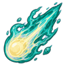
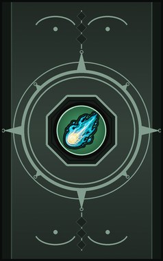
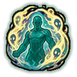
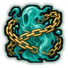
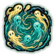
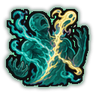

Soul Bolt D
A bolt of soul energy.
| Rank | Chakra | Cooldown | Class level |
|---|---|---|---|
| D | 10 | 15 s | 2 |

Technique trees › Professions and ANBU
7 techniques · Ninjutsu tab
Counts as a medical tree: D rank only, unless the pawn has a Medical Specialist build.

A bolt of soul energy.
| Rank | Chakra | Cooldown | Class level |
|---|---|---|---|
| D | 10 | 15 s | 2 |

Wrap the body in borrowed souls for a fight.
| Rank | Chakra | Cooldown | Class level |
|---|---|---|---|
| C | 18 | 25 s | 5 |

Chain one enemy's soul for ten seconds.
| Rank | Chakra | Cooldown | Class level |
|---|---|---|---|
| C | 18 | 25 s | 7 |

Pull at the souls of everyone in an area.
| Rank | Chakra | Cooldown | Class level |
|---|---|---|---|
| B | 30 | 42 s | 10 |
Pour soul energy into a friend's wounds.
| Rank | Chakra | Cooldown | Class level |
|---|---|---|---|
| B | 30 | 42 s | 11 |
The wail of the dead sends a group of enemies running.
| Rank | Chakra | Cooldown | Class level |
|---|---|---|---|
| A | 50 | 67 s | 14 |

S-rank. Tear at one enemy's soul.
| Rank | Chakra | Cooldown | Class level |
|---|---|---|---|
| S | 95 | 333 s | 18 |